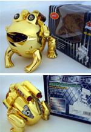
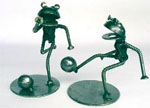
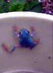
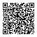
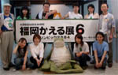

黄金のメカフロッグ出現！ 【千葉発機械仕掛けのカエル同志記者】先日メカフロッグの新種を発見、捕獲に成功しました。 全身金ピカのメッキで、舌が赤く、のどのあたりに赤いスイッチがあり、背中のタンクの後ろには赤いクリアキャップがついているのが特長です。外箱を見るとほとんど英語なので正真正銘の外来種のようです。また８カ国語で注意書きもあるので、世界各地に帰化している可能性もあります。 正式名称MECHANICAL FROG、日本での発売元は株式会社Y.S.N、MADE IN CHINA。
【全国かえる奉賛会】げええええ。これって大王が保有している、2000年11月08日号でも紹介したケロケロメカフロッグの黄金版ではないかああ。しかもパワーアップしているらしいぞ。なにしろ、国産で誕生したものの各地で在庫の山を築いていた彼等が、海外から逆上陸してくるろはあああ！ カエルりさいくるアート！ 【タイ国発学様】鉄製のカエルです。鉄のカエルですが非売品では御座いません。制作しておりますのはタイ国です。材料ですが車やバイクの廃材を利用しております。リサイクルアートとして制作させております。見ていただいた作品以外にもごあります。
【全国かえる奉賛会】これはすごいぞお。カエルがスポーツしているいろいろな場面が、とっても写実的なんだけど、実際にはありえないような謎な雰囲気でできているんだ。しかも、これが金属製とはびっくりするではないかあ。いったい、なぜカエルをテーマに選んだのか！続報を待つ。
カエルが表紙の釣り雑誌！【日本発あっこ同志記者】大王様、はじめまして。カエルが表紙の釣り雑誌を発見しましたのでご報告致します。
バスフィッシングにおけるカエルとの関わりが特集になっておりカエルの形をしたルアー図鑑というページもありました。まったく素晴らしい。 またもブルーカエル！ 【日本発門田＠家同志記者】 知人がこのカエルを見つけたのですが、これはなんというカエルですか？こいつも”ブルーカエル”ってやつですか？
【全国かえる奉賛会】今年はじめての出現報告であるー。ブルーかえるは吉兆といわれており、このカエルを発見した知人は、一刻も早く宮廷に連絡し、日本国の安泰を示す吉兆が起きたことを連絡しようではないかあああああああああああああああああ。 携帯で携帯＠カエル新聞を吸い取ろう！ 【全国かえる奉賛会】携帯から初めてカエル新聞を見たいというひとにとっては、アドレスを打つのが難儀なものよのう！そこでドコモとボーダフォンの一部機種から、カメラをかざしてコードを読みとるんぢゃああ。かえる新聞の紹介は自由なり！【全国かえる奉賛会】自分のホームページに、「かえる新聞で紹介されました！」と宣伝してもよいでしょうか。という問い合わせが続いているが、どんどんしていいぞおおおー。はくがつくし、権威にもなる。他人からは尊敬されて、カエラーぶりを誇ることができるというものぢゃあ。福岡かえる展６で、ケロリーヌ８世が誕生！ 【福岡かえる展６実行委員会】福岡かえる展６が閉幕したが、かえる展会場に登場した、この彼女！カエルヘアバンドに、カエルピアス、カエルネックレスにカエル指輪、カエルティーシャツに、カエルキーホルダー、カエル腕時計にカエル指輪、カエル腕輪にカエルバッグ、と全身カエルずくめの可愛い彼女が出現したときには、新しい時代の開幕を実感したなりいいい。彼女こそ、新たに転生した、ケロリーヌ８世なりいい。今後とも、町で彼女を見かけたら、転生を祝福しようではないかあ。 また、今年のカエル展に期間中たくさんの人にきていただきありがとうございました。 長野県と東京のカエルイベントも行われ、三ケ所全部に出席参加したカエリストは、名乗りをあげてください。かえる新聞で紹介します！ |
メールマガジン登録
メールマガジン解除
Powered by


かえる古新聞過去に取り上げた記事を見出し付きで一覧したい人は、ここをクリック◆創刊号を見る◆先週号を見る◆話題の号を見る◆かえる新聞の昔を読む
|
私も入っています。。全国かえる奉賛会
大王様に会うには、このバナーをクリック。ずっと奥に写真館があるぞ。全国かえる奉賛会に入会するには、自分のホームページのどこかに、下の部分を追加するとバナーがリンク付きで表示されるぞ。どんどん入会しましょー |


|